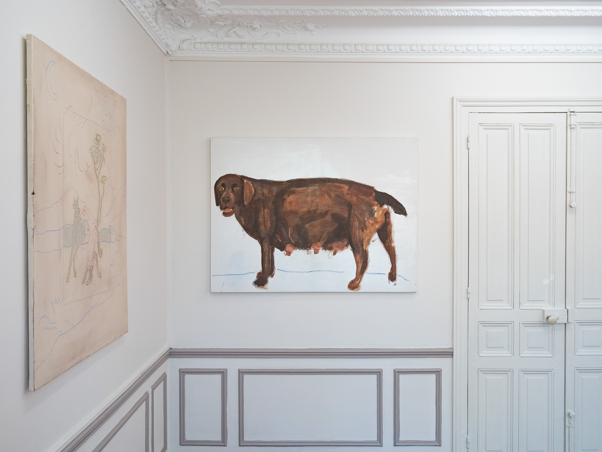
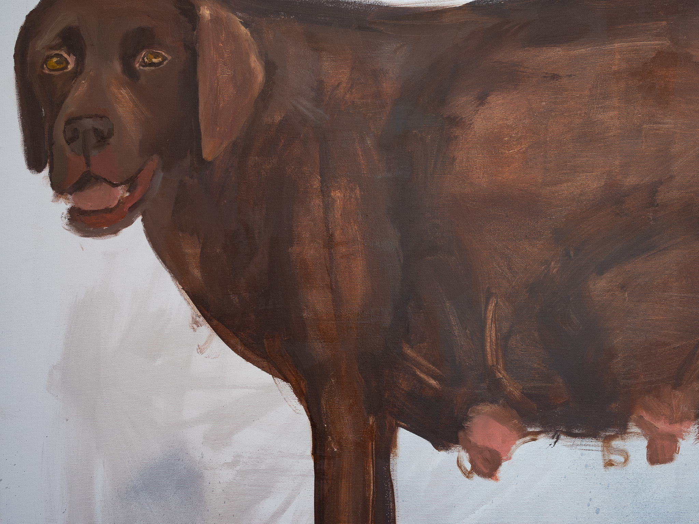
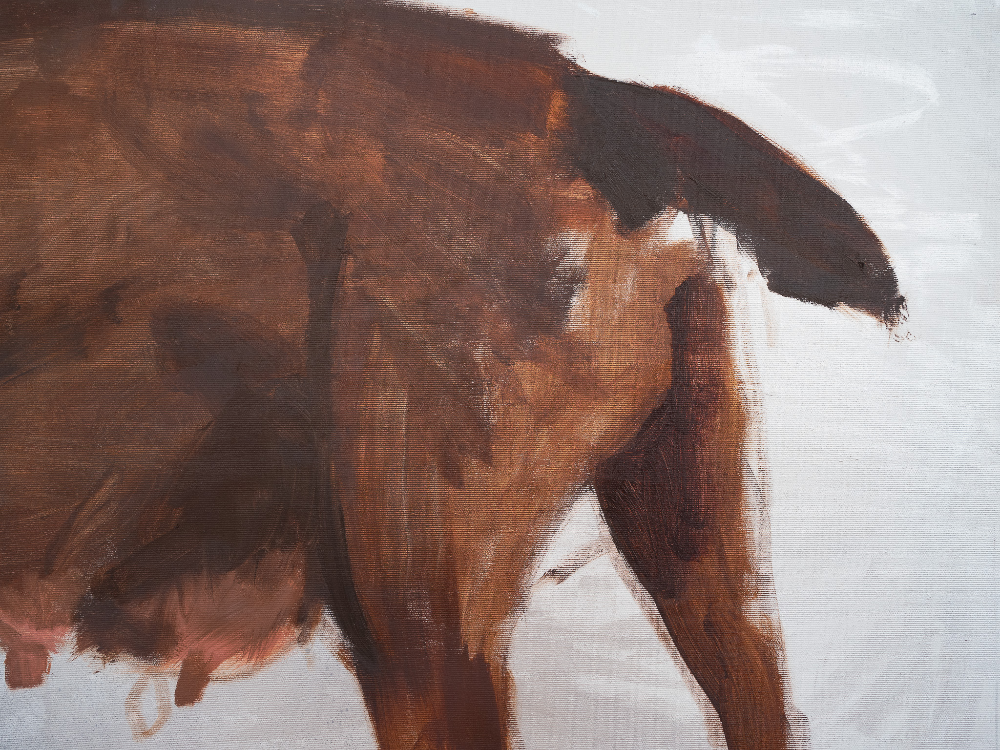
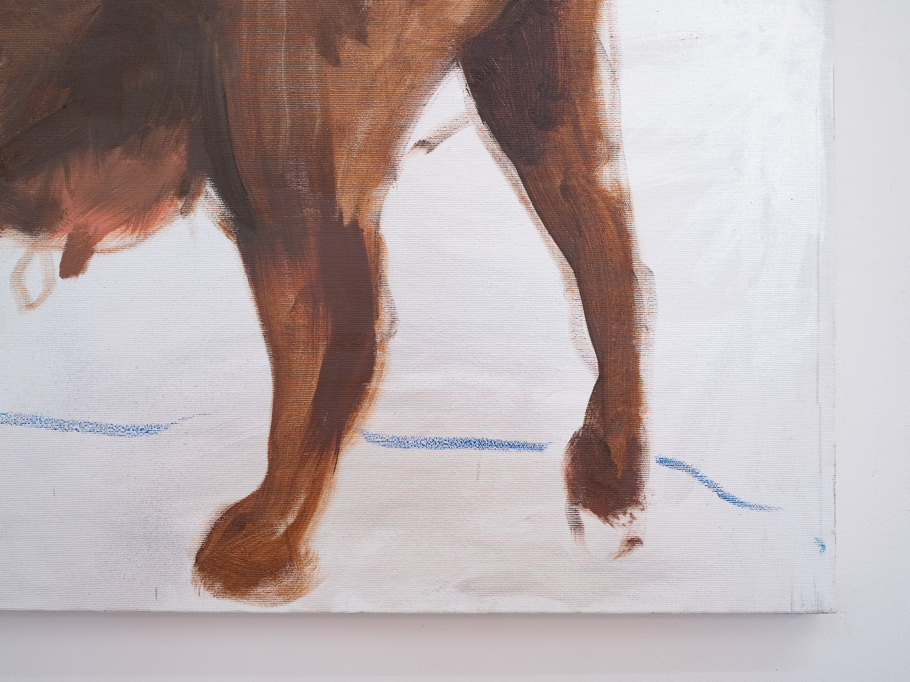
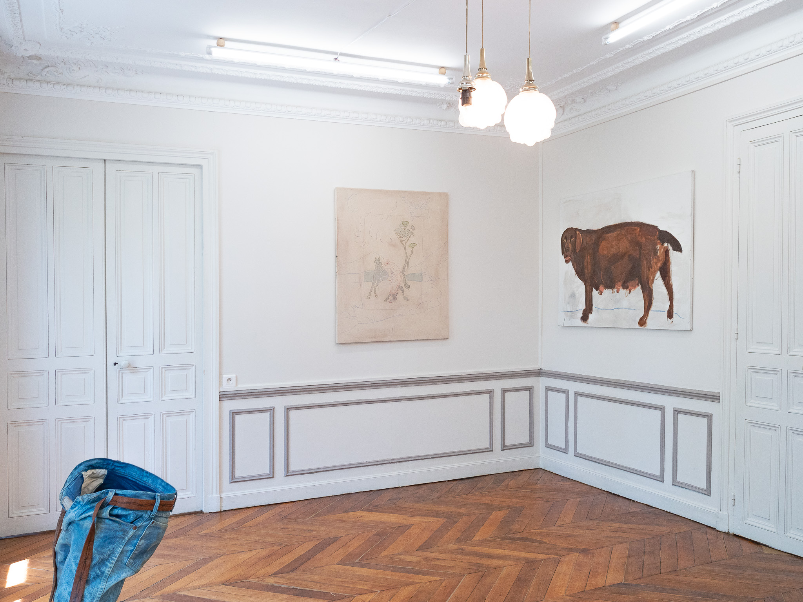

Annael Shavit
Entrée 001 · La Bride
Née1998, Tel Aviv
RésidenceParis
Au registreLa Bride · KR/01
Œuvres — 1 entrée





Annael Shavit, Chocolate labrador (not black), 2026. Oil, pastel and acrylic on canvas, 130 × 97 cm. Courtesy the artist. Photo : Matteo Kramer.
Demander la fiche →Group exhibitions
2025Centre Pompidou-Metz — collaboration Louvre / Beaux-Arts de Paris, avec Elizabeth Peyton
2025Hermès Faubourama (événement dessiné)
2025The More I Learn About People, The More I Like My Dog, Galerie C+A Contemporary, Vienne
2025« ANIMAL!? », Fonds Hélène & Édouard Leclerc pour la culture, Landerneau
2025Le Grippault — résidence internationale + exposition collective, près de Richelieu (Indre-et-Loire)
2024DNA « Good Dog », Beaux-Arts de Paris
2024Monsieur Nini, La Villette, Paris
2024Furry Friends Are Welcome, Galerie Programme (M/M Paris), Paris
2024In Time and With Water, Everything Changes, Fondation Victor Lyon, Paris
2024Sport is an Art (avec Charbonnel)
2023Spring Bloom, La Maison Bruneau
2022Galerie La Loupe Creative, Paris
20229m2 (exposition collective)
2022Exposition d’inauguration, La Maison Bruneau
2022Décembre à Montreuil, La Tour Orion, Montreuil
2022Entre Quatre Yeux, ECUJE, Paris
Education
2021–2026Beaux-Arts de Paris
2024DNA, diplôme de 3e année, Beaux-Arts de Paris (« Good Dog »)
2020–2021Histoire de l’art, Université Ouverte, Israël (Tel Aviv)
2019–2020Classe préparatoire, Académie des Arts et du Design Bezalel, Tel-Aviv
2013–2016Lycée d’art Alon, Ramat-Hasharon (mention français + études de théâtre)
Collaborations
Maison Hermès — projet « Faubourama » · collaboration « Blazer Blason »
Publications & collaborations
2026Je ne suis pas qu’un chien, Palais de Tokyo (film réalisé par Sylvia Vargane, à venir)
2025Entretien filmé, TimeOut Paris
2025Catalogue de l’exposition ANIMAL!?
2025Documentation de la résidence Le Grippault (télévision)
2025Richelieu, « Move Your Art! » au Grippault (journalisme)
2025Blazers Blasons
2024Monsieur Nini (entretien filmé autour de l’exposition Dogs In Art)